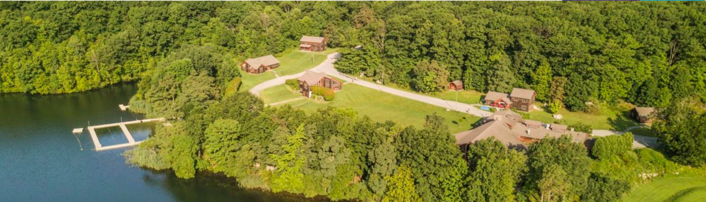
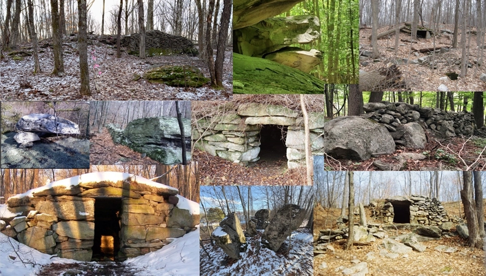
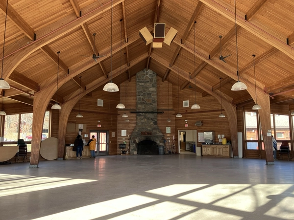

The Spring 2025 NEARA Conference will be held at Sharpe Reservation's Camp Mariah, near Fishkill New York on the first weekend of May.
The relaxed setting of Camp Mariah in the Sharpe Reservation in the Hudson Valley offers an ideal atmosphere to share presentations, meals, walks, and informal conversations. Whether new to NEARA or a long-time member, the Spring 2025 conference is an opportunity to visit new sites, learn and share new insights, and make new acquaintances or reconnect with old ones.
NOTE: The only way to attend the conference will be to pre-register online. Your name must be on the list of attendees in order to be admitted onto the Sharpe Reservation.

The keynote speaker will be Dr. William Fitzhugh,
We will be holding our annual members meeting Saturday morning. The current agenda is:
This will be followed by the Chapter Coordinator Reports, one of the highlights of each conference.
The latest field trips document is at: Spring 2025 Field Trips.
NEW: Due to limited parking, pre-registration is required for some field trips! Only people who have registered to attend the conference may participate in field trips.
Advance registration only! There are just two choices for attending the conference: with or without lodging. But you have to register before April 21st 2025.
Sign up and pay online with an option to pay by credit card or check at:
Mail must arrive before April 21st!
Recently built Camp Mariah features camp-style cabins with two, four-bunk sleeping rooms per cabin. There will be at most four people per room. Cabins have electricity, indoor showers and restrooms. They do not have microwaves or refrigerators. Bring your own sheets and towels. Lodging includes Saturday and Sunday breakfast.
Send requests to room with acquaintances to the Vice President (vicepresident@neara.org).
If you have any dietary restrictions, inform the Vice President (vicepresident@neara.org).
If you have any mobility limitations, inform the Registrar (registrar@neara.org). We may be able to accommodate you.
If you would prefer a hotel instead of a cabin, there are hotels 10 minutes away at the I-84 and US Route 9 interchange.
There will not be a Friday dinner option at the camp. Before arriving Friday evening, attendees are encouraged to have dinner or to get take-out at one of the many restaurants in Fishkill or at the I-84 and US Route 9 interchange. This could be an opportunity to share a meal with fellow field trippers.
Note: The Sharpe Reservation Gate closes to visitors at 10 PM.
Copyright © 2025 New England Antiquities Research Association. All rights reserved. Some materials are copyright their respective authors. Note that the views expressed here are the opinions of the respective authors and are not the official opinion of NEARA.
{kind=link}